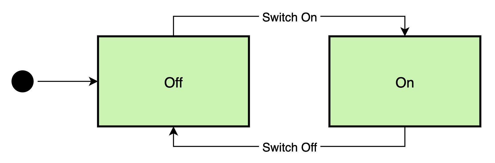
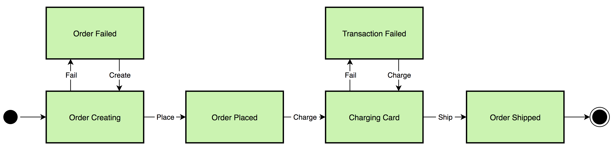

A Simple State Machine Framework in Go
The concept of State Machines is not new, and they form the core of a lot of systems that we come across daily, for example, elevators and traffic lights. State machines make it a lot easy to understand and implement multi-faceted systems where inputs can be asynchronous and are triggered by multiple sources.
In this post, I will describe the details of a simple state machine framework that I built to handle a complex scenario to obtain deterministic results.
Introduction
State machines are of several different types and newer models (like Statecharts) have also been designed in order to handle extremely complicated systems. The fundamentals of all of these patterns remain the same i.e. they consist of states and transitions. For the purpose of this post, I’ll be using the term state to describe the status of the system, and event to describe an input to the FSM (Finite State Machine) that can possibly trigger a transition from one state to another.
Light Switch Example

Let’s take a simple example of the light switch state machine that’s shown above. The machine starts in the off state and the user action of switching on i.e. triggering the switch-on event, causes the machine to transition over to the on state. And the reverse is also true, i.e. on triggering the switch-off event, the machine then transitiona back from the on state back to the off state. Note that triggering the switch-off event when in the off state means nothing i.e. the machine doesn’t react to it, and the same is also true when the switch-on event is triggered when the system is in the on state.
The Framework
Here is the framework in Go in under 100 lines of code.
// ErrEventRejected is the error returned when the state machine cannot process
// an event in the state that it is in.
var ErrEventRejected = errors.New("event rejected")
const (
// Default represents the default state of the system.
Default StateType = ""
// NoOp represents a no-op event.
NoOp EventType = "NoOp"
)
// StateType represents an extensible state type in the state machine.
type StateType string
// EventType represents an extensible event type in the state machine.
type EventType string
// EventContext represents the context to be passed to the action implementation.
type EventContext interface{}
// Action represents the action to be executed in a given state.
type Action interface {
Execute(eventCtx EventContext) EventType
}
// Events represents a mapping of events and states.
type Events map[EventType]StateType
// State binds a state with an action and a set of events it can handle.
type State struct {
Action Action
Events Events
}
// States represents a mapping of states and their implementations.
type States map[StateType]State
// StateMachine represents the state machine.
type StateMachine struct {
// Previous represents the previous state.
Previous StateType
// Current represents the current state.
Current StateType
// States holds the configuration of states and events handled by the state machine.
States States
// mutex ensures that only 1 event is processed by the state machine at any given time.
mutex sync.Mutex
}
// getNextState returns the next state for the event given the machine's current
// state, or an error if the event can't be handled in the given state.
func (s *StateMachine) getNextState(event EventType) (StateType, error) {
if state, ok := s.States[s.Current]; ok {
if state.Events != nil {
if next, ok := state.Events[event]; ok {
return next, nil
}
}
}
return Default, ErrEventRejected
}
// SendEvent sends an event to the state machine.
func (s *StateMachine) SendEvent(event EventType, eventCtx EventContext) error {
s.mutex.Lock()
defer s.mutex.Unlock()
for {
// Determine the next state for the event given the machine's current state.
nextState, err := s.getNextState(event)
if err != nil {
return ErrEventRejected
}
// Identify the state definition for the next state.
state, ok := s.States[nextState]
if !ok || state.Action == nil {
// configuration error
}
// Transition over to the next state.
s.Previous = s.Current
s.Current = nextState
// Execute the next state's action and loop over again if the event returned
// is not a no-op.
nextEvent := state.Action.Execute(eventCtx)
if nextEvent == NoOp {
return nil
}
event = nextEvent
}
}
For the sake of brevity, I’ve skipped over database handling in this post. It’s also quite easy to wire into this state machine framework.
Light Switch Example in Go
Here is the same light switch example from above, but this time implemented using the Go framework. Let’s first define the states and events for the light switch state machine.
const (
Off StateType = "Off"
On StateType = "On"
SwitchOff EventType = "SwitchOff"
SwitchOn EventType = "SwitchOn"
)
We can now also define the actions corresponding to each state.
// OffAction represents the action executed on entering the Off state.
type OffAction struct{}
func (a *OffAction) Execute(eventCtx EventContext) EventType {
fmt.Println("The light has been switched off")
return NoOp
}
// OnAction represents the action executed on entering the On state.
type OnAction struct{}
func (a *OnAction) Execute(eventCtx EventContext) EventType {
fmt.Println("The light has been switched on")
return NoOp
}
We can now define our state machine using the previously defined states, events and actions.
func newLightSwitchFSM() *StateMachine {
return &StateMachine{
States: States{
Default: State{
Events: Events{
SwitchOff: Off,
},
},
Off: State{
Action: &OffAction{},
Events: Events{
SwitchOn: On,
},
},
On: State{
Action: &OnAction{},
Events: Events{
SwitchOff: Off,
},
},
},
}
}
Let’s now put our light switch state machine to test.
func TestLightSwitchStateMachine(t *testing.T) {
// Create a new instance of the light switch state machine.
lightSwitchFsm := newLightSwitchFSM()
// Set the initial "off" state in the state machine.
err := lightSwitchFsm.SendEvent(SwitchOff, nil)
if err != nil {
t.Errorf("Couldn't set the initial state of the state machine, err: %v", err)
}
// Send the switch-off event again and expect the state machine to return an error.
err = lightSwitchFsm.SendEvent(SwitchOff, nil)
if err != ErrEventRejected {
t.Errorf("Expected the event rejected error, got nil")
}
// Send the switch-on event and expect the state machine to transition to the
// "on" state.
err = lightSwitchFsm.SendEvent(SwitchOn, nil)
if err != nil {
t.Errorf("Couldn't switch the light on, err: %v", err)
}
// Send the switch-on event again and expect the state machine to return an error.
err = lightSwitchFsm.SendEvent(SwitchOn, nil)
if err != ErrEventRejected {
t.Errorf("Expected the event rejected error, got nil")
}
// Send the switch-off event and expect the state machine to transition back
// to the "off" state.
err = lightSwitchFsm.SendEvent(SwitchOff, nil)
if err != nil {
t.Errorf("Couldn't switch the light off, err: %v", err)
}
}
As you see above, the whole state machine becomes very clear just by looking at the lightSwitchFsm
definition. The OffAction and OnAction implement the Action interface from the framework and
in this simple example they both print a statement to stdout. Events are sent to the state
machine using statements like lightSwitchFsm.SendEvent(SwitchOn, nil) where the first parameter is
the event itself and the second parameter represents the EventContext. In this example, there
is no need for passing any context, so we send nil, but we will also see another example that
showcases its usage.
Following is the output from executing the above test.
=== RUN TestLightSwitchStateMachine
The light has been switched off
The light has been switched on
The light has been switched off
--- PASS: TestLightSwitchStateMachine (0.00s)
As expected, the state machine transitions to the initial off state, then to the on state and finally back to the off state, rejecting any events that it can’t handle according to the definition of the state machine and the state that it is in when the event arrives.
Order Processing Example in Go

Here is a slightly fancier state machine example of order processing. The state machine starts in
the order creating state where it validates the order details (passed via EventContext). It
then can transition to the order created state if the order is valid, and if not, it
transitions over to the order failed state. Then another event is sent to it externally for
charging the user’s card and shipping the order. The state machine here transitions to the
charging card state, and if the card is valid, transitions over to the order shipped
state, and if not, to the transaction failed state.
To implement this in Go, we first define the set of states and events as in the previous example.
const (
CreatingOrder StateType = "CreatingOrder"
OrderFailed StateType = "OrderFailed"
OrderPlaced StateType = "OrderPlaced"
ChargingCard StateType = "ChargingCard"
TransactionFailed StateType = "TransactionFailed"
OrderShipped StateType = "OrderShipped"
CreateOrder EventType = "CreateOrder"
FailOrder EventType = "FailOrder"
PlaceOrder EventType = "PlaceOrder"
ChargeCard EventType = "ChargeCard"
FailTransaction EventType = "FailTransaction"
ShipOrder EventType = "ShipOrder"
)
This time we also define special context types for the purpose of passing data to event actions.
type OrderCreationContext struct {
items []string
err error
}
func (c *OrderCreationContext) String() string {
return fmt.Sprintf("OrderCreationContext [ items: %s, err: %v ]",
strings.Join(c.items, ","), c.err)
}
type OrderShipmentContext struct {
cardNumber string
address string
err error
}
func (c *OrderShipmentContext) String() string {
return fmt.Sprintf("OrderShipmentContext [ cardNumber: %s, address: %s, err: %v ]",
c.cardNumber, c.address, c.err)
}
We can now define actions for all our states.
type CreatingOrderAction struct{}
func (a *CreatingOrderAction) Execute(eventCtx EventContext) EventType {
order := eventCtx.(*OrderCreationContext)
fmt.Println("Validating, order:", order)
if len(order.items) == 0 {
order.err = errors.New("Insufficient number of items in order")
return FailOrder
}
return PlaceOrder
}
type OrderFailedAction struct{}
func (a *OrderFailedAction) Execute(eventCtx EventContext) EventType {
order := eventCtx.(*OrderCreationContext)
fmt.Println("Order failed, err:", order.err)
return NoOp
}
type OrderPlacedAction struct{}
func (a *OrderPlacedAction) Execute(eventCtx EventContext) EventType {
order := eventCtx.(*OrderCreationContext)
fmt.Println("Order placed, items:", order.items)
return NoOp
}
type ChargingCardAction struct{}
func (a *ChargingCardAction) Execute(eventCtx EventContext) EventType {
shipment := eventCtx.(*OrderShipmentContext)
fmt.Println("Validating card, shipment:", shipment)
if shipment.cardNumber == "" {
shipment.err = errors.New("Card number is invalid")
return FailTransaction
}
return ShipOrder
}
type TransactionFailedAction struct{}
func (a *TransactionFailedAction) Execute(eventCtx EventContext) EventType {
shipment := eventCtx.(*OrderShipmentContext)
fmt.Println("Transaction failed, err:", shipment.err)
return NoOp
}
type OrderShippedAction struct{}
func (a *OrderShippedAction) Execute(eventCtx EventContext) EventType {
shipment := eventCtx.(*OrderShipmentContext)
fmt.Println("Order shipped, address:", shipment.address)
return NoOp
}
Let’s now define our state machine.
func newOrderFSM() *StateMachine {
return &StateMachine{
States: States{
Default: State{
Events: Events{
CreateOrder: CreatingOrder,
},
},
CreatingOrder: State{
Action: &CreatingOrderAction{},
Events: Events{
FailOrder: OrderFailed,
PlaceOrder: OrderPlaced,
},
},
OrderFailed: State{
Action: &OrderFailedAction{},
Events: Events{
CreateOrder: CreatingOrder,
},
},
OrderPlaced: State{
Action: &OrderPlacedAction{},
Events: Events{
ChargeCard: ChargingCard,
},
},
ChargingCard: State{
Action: &ChargingCardAction{},
Events: Events{
FailTransaction: TransactionFailed,
ShipOrder: OrderShipped,
},
},
TransactionFailed: State{
Action: &TransactionFailedAction{},
Events: Events{
ChargeCard: ChargingCard,
},
},
OrderShipped: State{
Action: &OrderShippedAction{},
},
},
}
}
Let’s put our order processing FSM to test.
func TestOrderFSM(t *testing.T) {
orderFsm := newOrderFSM()
// Define the context for order creation.
creationCtx := &OrderCreationContext{
items: []string{},
}
// Try to create an order with invalid set of items.
err := orderFsm.SendEvent(CreateOrder, creationCtx)
if err != nil {
t.Errorf("Failed to send create order event, err: %v", err)
}
// The state machine should enter the OrderFailed state.
if orderFsm.Current != OrderFailed {
t.Errorf("Expected the FSM to be in the OrderFailed state, actual: %s",
orderFsm.Current)
}
// Let's fix the order creation context.
creationCtx = &OrderCreationContext{
items: []string{"foo", "bar"},
}
// Let's now retry the same order with a valid set of items.
err = orderFsm.SendEvent(CreateOrder, creationCtx)
if err != nil {
t.Errorf("Failed to send create order event, err: %v", err)
}
// The state machine should enter the OrderPlaced state.
if orderFsm.Current != OrderPlaced {
t.Errorf("Expected the FSM to be in the OrderPlaced state, actual: %s",
orderFsm.Current)
}
// Let's now define the context for shipping the order.
shipmentCtx := &OrderShipmentContext{
cardNumber: "",
address: "123 Foo Street, Bar Baz, QU 45678, USA",
}
// Try to charge the card using an invalid card number.
err = orderFsm.SendEvent(ChargeCard, shipmentCtx)
if err != nil {
t.Errorf("Failed to send charge card event, err: %v", err)
}
// The state machine should enter the TransactionFailed state.
if orderFsm.Current != TransactionFailed {
t.Errorf("Expected the FSM to be in the TransactionFailed state, actual: %s",
orderFsm.Current)
}
// Let's fix the shipment context.
shipmentCtx = &OrderShipmentContext{
cardNumber: "0000-0000-0000-0000",
address: "123 Foo Street, Bar Baz, QU 45678, USA",
}
// Let's now retry the transaction with a valid card number.
err = orderFsm.SendEvent(ChargeCard, shipmentCtx)
if err != nil {
t.Errorf("Failed to send charge card event, err: %v", err)
}
// The state machine should enter the OrderShipped state.
if orderFsm.Current != OrderShipped {
t.Errorf("Expected the FSM to be in the OrderShipped state, actual: %s",
orderFsm.Current)
}
// Let's try charging the card again for the same order. We should see the
// event getting rejected as the card has been already charged once and the
// state machine is in the OrderShipped state.
err = orderFsm.SendEvent(ChargeCard, shipmentCtx)
if err != ErrEventRejected {
t.Errorf("Expected the FSM to return a rejected event error")
}
}
Here’s the output from running the test.
=== RUN TestOrderFSM
Validating, order: OrderCreationContext [ items: , err: <nil> ]
Order failed, err: Insufficient number of items in order
Validating, order: OrderCreationContext [ items: foo,bar, err: <nil> ]
Order placed, items: [foo bar]
Validating card, shipment: OrderShipmentContext [ cardNumber: , address: 123 Foo Street, Bar Baz, QU 45678, USA, err: <nil> ]
Transaction failed, err: Card number is invalid
Validating card, shipment: OrderShipmentContext [ cardNumber: 0000-0000-0000-0000, address: 123 Foo Street, Bar Baz, QU 45678, USA, err: <nil> ]
Order shipped, address: 123 Foo Street, Bar Baz, QU 45678, USA
--- PASS: TestOrderFSM (0.00s)
This implementation passes in appropriate contexts (i.e. OrderCreationContext and
OrderShipmentContext) along with the event during the call to SendEvent. Note that the event
actions called as a part of the loop for a single event all get the same context and can reuse
fields (for example, see the usage of the items field in both CreatingOrderAction and the
OrderPlacedAction). One key situation that was very easily handled by the framework is a duplicate
call for charging the card (see the last part of the test above). Since the state machine had
already transitioned over to the OrderShipped state, the ChargeCard event was rejected straight
away and we prevented the system from getting into an inconsistent state just by the help of the
declarative state machine configuration.
Conclusion
State machines are a powerful concept which can bring order into systems with asynchronous and multi-source inputs. As shown in the examples in this post, state machines are capable of producing deterministic behavior in complex situations, and the state machine framework described in this post can nicely handle simple use-cases that you may come across in everyday life.
I’d love to hear your feedback!
Disclaimer: My postings are my own and don’t necessarily represent VMware’s positions, strategies or opinions.